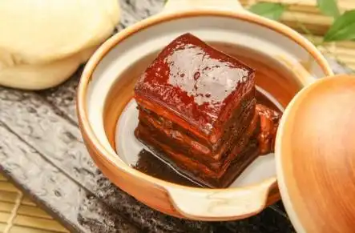

蟹粉狮子头
蟹粉狮子头源自江苏扬州地区，属于淮扬菜系，其历史可追溯至隋唐，因其形与雄狮头部相似，故称为“狮子头”。经宋、元、明、清四个朝代演化，演变成如今的蟹粉狮子头。
东安子鸡
又名东安鸡，源自湖南省永州市东安县，其历史可以追溯到唐朝，最早是由当地一家叫“东安鸡”的客栈发明的，因受唐朝将领郭子仪的喜爱而广为人知，后来成为皇室御膳。
清蒸武昌鱼
源自湖北，是楚菜中的经典之作，历史悠久且文化底蕴深厚。在三国时期，武昌鱼因其鲜美的口感而享有盛名，到了宋代更是得到了文人雅士的赞美。

东坡肉
苏轼担任徐州知州期间，建议家里人把红烧肉回馈给当地居民，百姓因此称其为“回馈肉”。苏轼被贬到黄州时，大家模仿他的作品，并称其为“东坡肉”。
水晶肴肉
亦称水晶肴蹄，是江苏镇江的一道名菜，至今已有三百多年的历史。成菜之后的肉色红艳，外皮洁白，光泽润滑，汤汁透明，宛若水晶，因此被称为此名。
麻婆豆腐
始于清同治初年，据《成都通览》记载，“陈麻婆豆腐”在清朝末年被列为成都著名美食，陈麻婆川菜馆虽距今一百四十余年但盛名长盛不衰。
无为熏鸭
无为熏鸭是徽菜的经典佳肴，距今已有两百多年的历史。这道菜成品色泽金灿灿，外皮厚实油润，肉质鲜美，香气扑鼻，若配以醋食用，风味更加出众。
百鸟朝凤
清乾隆时的宫廷美食，曾在慈禧太后六十华诞时被奉为庆祝佳肴。这道菜造型独特，味道鲜美，慈禧太后对其赞不绝口。之后发展成为京菜、苏菜、粤菜等地方菜系的标志性菜肴。
清炖肥鸭
自唐朝开始，宫廷宴席上必不可少的就是整只鸭。后来这道菜成为“满汉全席”中的一项重要佳肴，在末代皇帝溥仪的时期更名为“三鲜鸭子”。
御用佛跳墙
最初属于南方菜系，清朝入关后，御膳房依据满族饮食调整加入了鹿肉和飞禽等野味，最终演变为皇帝钟爱的佳肴之一。是闽菜的五大代表菜之一。
黄焖鱼翅
清朝末年，由翰林院官员谭宗浚及其子所创立的谭家菜中，这道菜最为著名。随后，这道菜以食盒的方式送入皇宫厨房，经过皇帝的赞赏后，被纳入了御膳菜单，并流传至今。
小麦